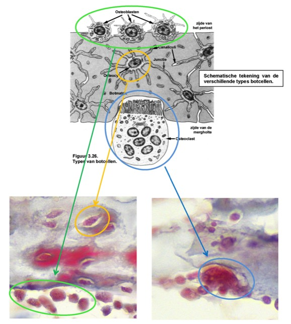

B. Kan je alle types botcellen terugvinden?
Drie types botcellen komen voor: osteoblasten, osteocyten en osteoclasten.
Osteoblasten zijn de cellen die instaan voor de aanmaak van de organische componenten (collageenvezels en grondsubstantie) van de botmatrix (het osteoïd). We vinden osteoblasten terug in een min of meer aaneengesloten rij aan de rand van een botstukje.
Osteocyten. Wanneer osteoblasten zichzelf volledig hebben ‘ingemetseld’ met de extracellulaire matrix die ze produceren worden ze osteocyten genoemd. Osteocyten liggen in lacunes waarin zich weefselvocht bevindt en staan in voor het onderhoud van de matrix. Omdat de matrix verkalkt is en hierdoor diffusie van voedingsstoffen niet mogelijk is, staan de osteocyten met mekaar in verbinding via fijne uitlopers die verlopen in kleine kanaaltjes die de lacunes met elkaar verbinden, de canaliculi. Op gewone lichtmicroscopische coupes zijn deze uitlopers en kanaaltjes niet te zien.
Osteoclasten. Niet alleen tijdens de vorming en groei wordt botweefsel voortdurend geremodelleerd (opgebouwd en afgebroken), maar ook in volwassen bot zijn cellen aanwezig die de matrix zullen afbreken. Het vrijgekomen calcium dient dan om de bloedspiegel aan calcium op peil te houden. De cellen die instaan voor deze afbraak, zijn de osteoclasten. Osteoclasten zijn grote veelkernige fagocyten met onregelmatig uitzicht. Osteoclasten vind je dikwijls terug in een holte aan het oppervlak van het botstukje (= de lacune van Howship), waar ze de matrix hebben geresorbeerd.
Drie types botcellen komen voor: osteoblasten, osteocyten en osteoclasten.
Osteoblasten zijn de cellen die instaan voor de aanmaak van de organische componenten (collageenvezels en grondsubstantie) van de botmatrix (het osteoïd). We vinden osteoblasten terug in een min of meer aaneengesloten rij aan de rand van een botstukje.
Osteocyten. Wanneer osteoblasten zichzelf volledig hebben ‘ingemetseld’ met de extracellulaire matrix die ze produceren worden ze osteocyten genoemd. Osteocyten liggen in lacunes waarin zich weefselvocht bevindt en staan in voor het onderhoud van de matrix. Omdat de matrix verkalkt is en hierdoor diffusie van voedingsstoffen niet mogelijk is, staan de osteocyten met mekaar in verbinding via fijne uitlopers die verlopen in kleine kanaaltjes die de lacunes met elkaar verbinden, de canaliculi. Op gewone lichtmicroscopische coupes zijn deze uitlopers en kanaaltjes niet te zien.
Osteoclasten. Niet alleen tijdens de vorming en groei wordt botweefsel voortdurend geremodelleerd (opgebouwd en afgebroken), maar ook in volwassen bot zijn cellen aanwezig die de matrix zullen afbreken. Het vrijgekomen calcium dient dan om de bloedspiegel aan calcium op peil te houden. De cellen die instaan voor deze afbraak, zijn de osteoclasten. Osteoclasten zijn grote veelkernige fagocyten met onregelmatig uitzicht. Osteoclasten vind je dikwijls terug in een holte aan het oppervlak van het botstukje (= de lacune van Howship), waar ze de matrix hebben geresorbeerd.

Oranje omcirkeld: osteocyt in lacune
Groen omcirkeld: rijtje osteoblasten
Blauw omcirkeld: osteoclast in lacune van Howship
Vordering zelfstudie botweefsel: